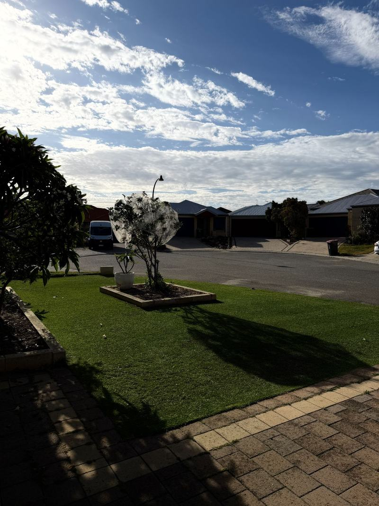
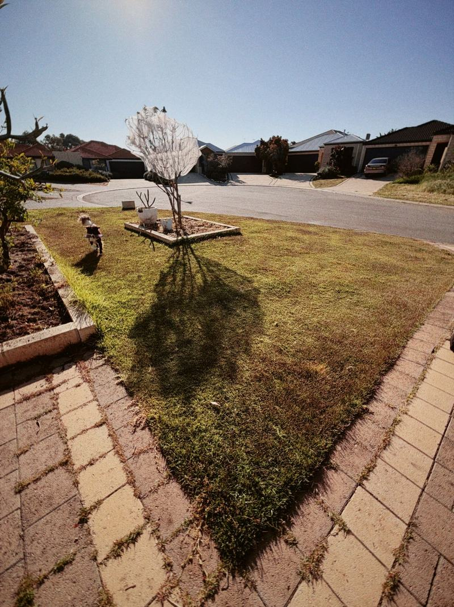
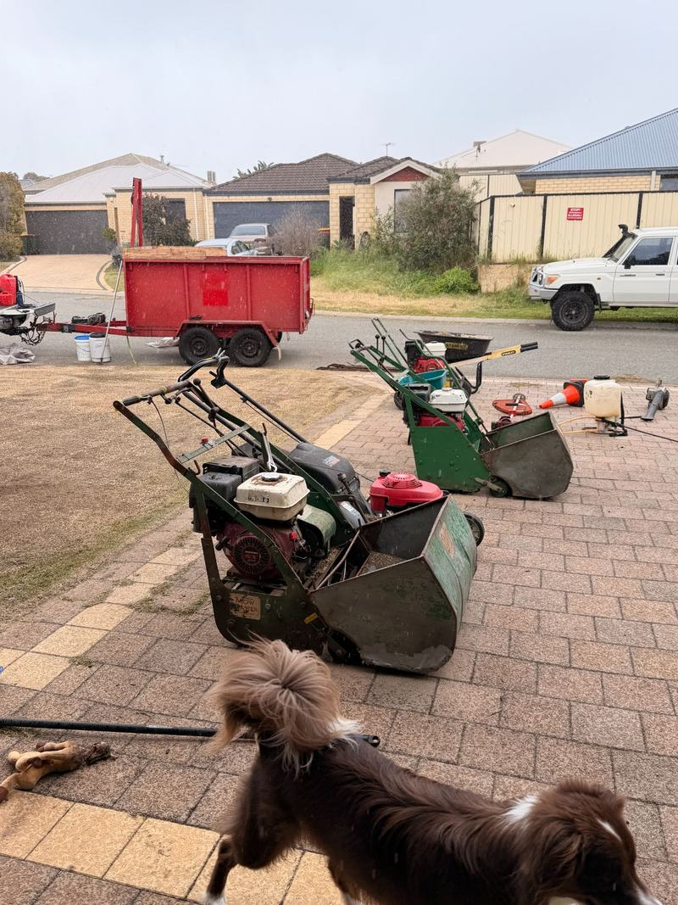

Verti-mowing and dethatching
From $8 /m²
You need this if the lawn feels spongy underfoot, or stays patchy however much you water it. Fertiliser and wetting agent included.
How verti-mowing works
Verti-mowing from $8/m². Aeration from $1.50/m².
Water running off instead of soaking in? That's what we fix. Free quote from photos, and you don't need to be home.
my lawn has come back to life looking a million bucks
Mick Wood, Google review
A real Perth front lawn we renovated. No filters and no stock photos. Drag the handle to compare.
Thatch stripped out, soil opened up, then fed and watered properly.

Your sprinklers run, your water bill climbs, and the lawn still browns off. The water is not reaching the roots.
Perth sand goes hydrophobic once it dries out in the heat. Water beads on the surface and runs off to the edges instead of soaking in, so the soil under the green stays bone dry. A wetting agent is what breaks that, and treatments start at $75.
A built-up layer of dead runners sits between the soil and the green growth like a mat. Water, fertiliser and wetting agent sit on top of it. Verti-mowing cuts through and pulls it out.
Hard soil means roots stay near the surface, where the heat gets them first. Coring opens the profile so water gets down and roots follow it deeper, which is what carries a lawn through February.
Blocked and misaimed sprinkler heads are normal, and you only find them by checking. A reticulation check is part of the Complete Rejuvenation Package.
Per-square-metre rates, published. $400 minimum job.
From $8 /m²
You need this if the lawn feels spongy underfoot, or stays patchy however much you water it. Fertiliser and wetting agent included.
How verti-mowing worksFrom $1.50 /m²
You need this if water runs off instead of soaking in. Fertiliser and wetting agent included.
How aeration worksQuoted after a free assessment
You need this if the lawn has hollows and bumps. It comes back flatter and denser.
How top dressing worksPriced per lawn
You need this if the lawn is tired all round. Dethatch, aerate, top dress, fertilise, wetting agent and a reticulation check in one visit.
Price the full packageBroadleaf weeds, wintergrass and more, treated by a licensed weed technician. On its own or with your renovation. Quoted after a free assessment.
Wetting agent and soil additives for sand that has gone water-repellent. Insecticide is quoted after a free assessment.
Use the estimate below or text us a few photos. Quotes are free and you don't need to be home.
Dethatch, aerate, top dress and fertilise, whichever your lawn needs. EFTPOS on the day.
With water and a feed behind it, most lawns are being mown again within 2 to 3 weeks.
Thin, patchy and full of dead thatch after winter. Water sits on top instead of soaking in.
The verti-mower cuts down through the dead layer and pulls it out. It looks brutal for a couple of weeks. That is normal.

The aerator punches holes through the compacted sand so water, air and fertiliser get down to the roots.

Fresh top dressing fills the hollows and gives the runners something to root into.
Fertiliser and wetting agent go on, the retic gets checked, and the lawn grows back thick.
Set your lawn size, pick the work, and send it through. We confirm the final price before anything is booked.
This is a from-price. Access, turf condition and thatch depth can move it. After top dressing, the full package or equipment hire? Use the full calculator.
★★★★★"Our lawn has been deteriorating the last few years and every year more weeds keep popping up… I went for their total lawn rejuvenation package and my lawn has come back to life looking a million bucks. I’ve wasted so much money the last couple of years trying to get the lawn looking good again myself. Highly recommend these guys, easy to deal with and worth every penny."
★★★★★"Arrived on time, top dressed the lawn and adjusted all the sprinklers to ensure proper coverage of retic ready for summer. The attention to detail was evident throughout, and the lawn is already looking much healthier after a few days."
We dry-hire the machines we run on our own jobs to homeowners and contractors across Perth.

All of the Perth metro, from Two Rocks to Mandurah and from the coast to the hills. Residential and commercial.
Vertimowing season runs from September through to mid-April, so summer is well inside it. Spring is the ideal window because the lawn gets the whole season to thicken up. Summer still works, and it is when most people notice the problem: the lawn is growing hard in the heat, so it recovers fast, and getting water down to the roots matters far more in January than it does in September.
It depends on the weather and the health of your lawn, so recovery time will vary. Dethatching is aggressive by design, and that short, scalped look straight after is completely normal. With water and a feed behind it, most lawns come back noticeably thicker and greener. As a rule of thumb, you'll be mowing again within 2-3 weeks.
Dethatching, aeration, topdressing, fertilising, wetting agent and a reticulation check: the full reset, done in one booking.
They're free, and you don't need to be home. Send your details and a few photos online or via Facebook and we'll price it up. Prefer an on-site assessment? We do those too. EFTPOS available on the day.
Yes, but the depth matters. Buffalo (Sir Walter, Palmetto, Sapphire) is a surface-runner and doesn't tolerate being cut right to the soil, so we set the blades shallower than we do for couch, removing the thatch without scalping the runners. Couch handles a much deeper cut and actually responds better to it. Not sure what grass you have? Send a photo with your quote and we'll tell you.
Week-by-week recovery after verti-mowing or coring, plus the aftercare products we use ourselves.
Free quotes from photos or on site. Renovation season runs to mid-April, so there is still a whole summer of growing weather to get the lawn back.